Forget about the weather, "So, how about that Trump guy?" has become the preferred way of starting smalltalk for people around the globe.
The US Presidential Primaries have been the world’s biggest news sensation for the past 12 months, and the coverage will only increase now that both major parties have their presumptive nominees for the general election. Twitter is one of the most powerful media platforms used by news stations and politicians alike, so I used it to explore just how many, and what kind, of political messages were being seen by the public during the weeks and months leading to the end of the presidential primaries.
I learned that the two presumptive nominees, Donald Trump and Hillary Clinton, were both mentioned more than the candidates that they were running against in the media.
I also learned that they were both polarizing compared to the other candidates: Their tweets were more likely to be highly emotional (either negatively or positively), and so were the media's tweets about them.
What 27,000 Tweets can tell you about the Presidential Race
In total I collected and analyzed 27,000 tweets by combining the powerful graphical web scraping tool ParseHub and the sentiment analysis API from text-processing.com with python and Jupyter Notebook.
My data came from the twitter accounts of the USA’s biggest news sources, as well as from the candidates themselves, but my process can be used to analyze any twitter account or social media page – exactly what some software companies may charge you thousands of dollars per month to do. In this article I will give you a few tell-tale statistics about the phenomenally popular presidential race, and then I will walk you through how I found them so you that you too can begin to analyze the text data from social media.
The media was absolutely obsessed with the primary campaigns.
How obsessed? In order to find out, I counted every time a tweet mentioned the name of one of the candidates, from each of the 3 major news networks’ last 3000 tweets.
CNN, Fox News and MSNBC all have general news twitter accounts that they use to share their important stories. The results for these accounts varied by network. On the very lowest end of the scale, only 22% of @cnn’s last 3000 tweets mention a primary candidate, while over half of @msnbc’s last 3000 tweets do. Considering this account is used to share every important MSNBC story, this is higher than I ever would have expected. It doesn’t matter where you got your news from, you were hearing about the presidential primaries constantly – and possibly even once out every two stories.
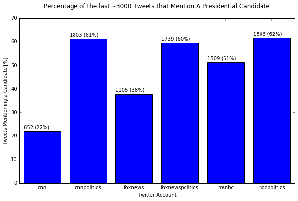
The accounts that each network uses to share purely their political stories, @cnnpolitics, @foxnewspolitics and @NBCpolitics, shared very nearly the same number of tweets mentioning the name of a candidate, about 1800 out of 3000, or just under two-thirds of their total tweets.
Donald Trump was the focus of the Attention.
Donald Trump was mentioned much more than any of the other 5 other longest running Democratic and Republican candidates. In fact, between May 10 and May 30, all six of the accounts mentioned him in between 50% and 60% of the tweets where a candidate was mentioned.
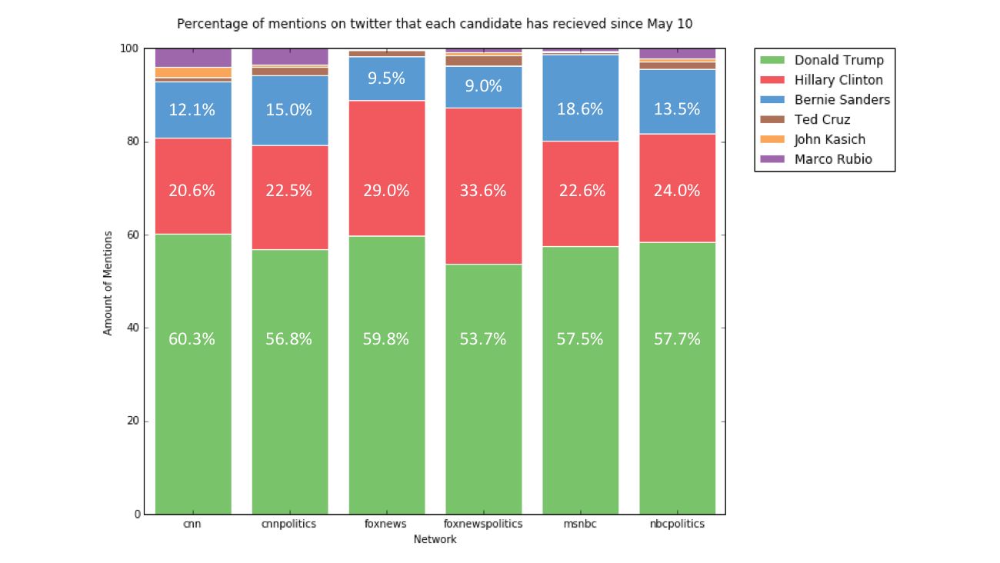
Out of the 17623 tweets I gathered from the 6 different accounts, Donald Trump’s was mentioned in 5035, close to 1 in every 3 tweets.
You can see that the two CNN accounts continued to report on the three former Republican candidates, Ted Cruz, John Kasich and Marco Rubio, even after they dropped out, whereas @msnbc and @foxnews stopped reporting on them almost entirely.
We can see how much more attention Trump got over his opponents while they were still running by looking at the tweets of @NBCnewsplotics and @foxnewspolitics, whose tweets continue into late 2015. In the plots below, you can see that the number of times Trump was mentioned from both twitter accounts grew much faster than his opponents starting in January, until he was receiving many times more mentions per day than any of the others by mid-March. This is when the other candidates were at the make or break moments in their campaigns.
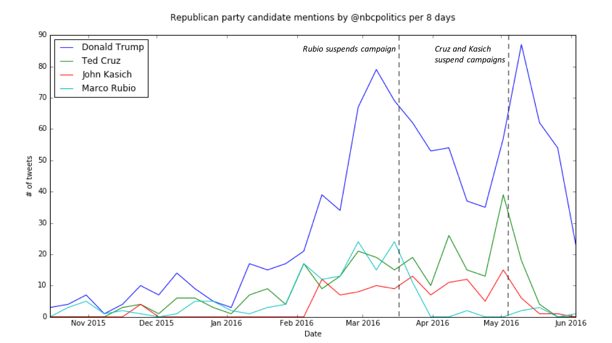
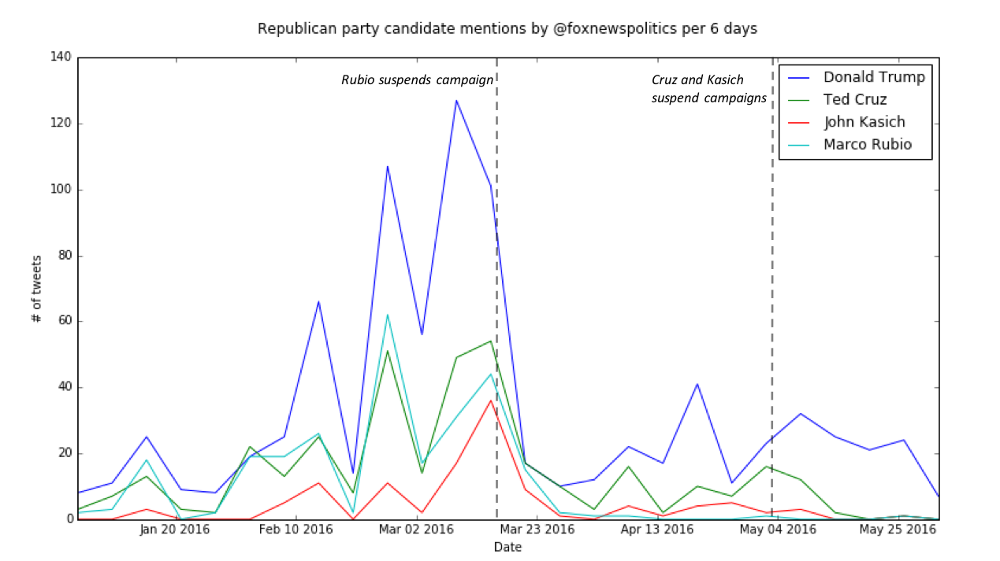
The breakdown of how many times each candidate was mentioned between February and May can be found below, and it does look more evenly distributed the post-May bar graph. However, for both networks, Trump nevertheless received more mentions than all three of his opponents combined.
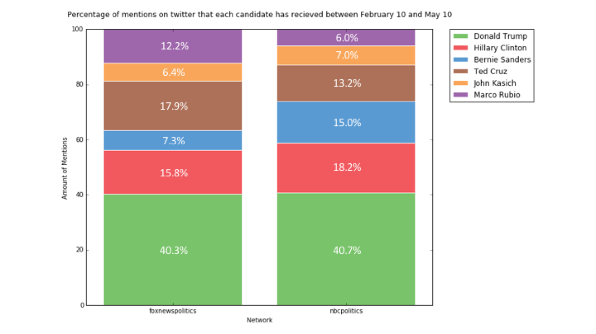
It is hard not to speculate that this contributed to his political popularity. Whereas the news stations may be reporting on him because of his widely publicized scandals, they spread awareness of his campaign far more than they have spread awareness of any of the other candidates.
A candidate’s media attention is a good measure of their political popularity.
So Donald Trump received much more news coverage than his opponents did, right before he secured his position as the Republican presumptive nominee. Was the same true for Clinton, who just secured her position over Sanders on Wednesday night?
The trends are not entirely similar.
On one hand, The Fox accounts do mention Hillary Clinton much more than the two other networks, and they do also mention Bernie Sanders far less. On the other hand, Sanders was mentioned the most by @msnbc, nearly equal to the number of times Clinton was mentioned. The network’s corresponding political account also had coverage that was similar for both candidates but, again, not quite equal.
You can see in the plots below that the coverage on Sanders and Clinton by @msnbc and @NBCpolitics are very similar. For @NBCpolitics specifically, which has tweets dating back to late 2015, you can see that both candidates received similar growth in attention starting in late January.
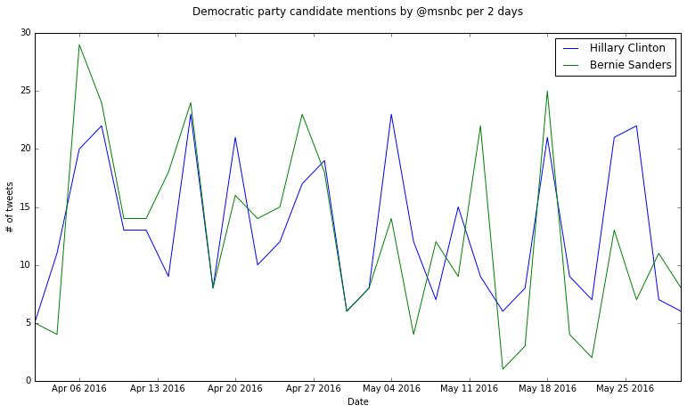
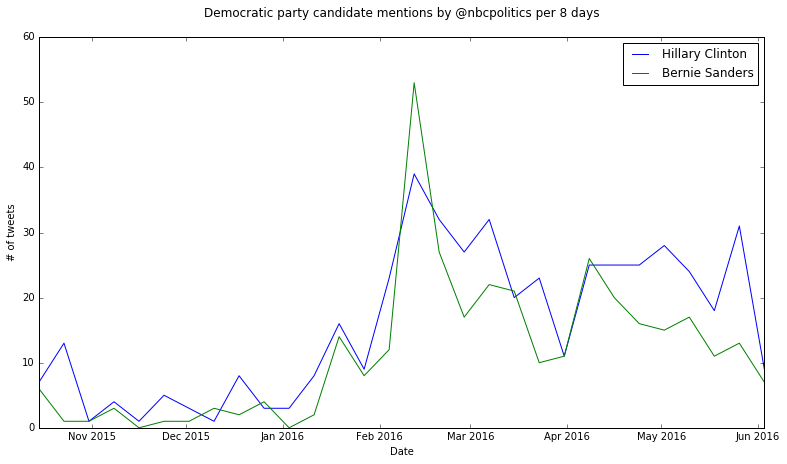
If you look at the plots of the two Fox News accounts, however, you can see that Clinton always gets more attention than Sanders.
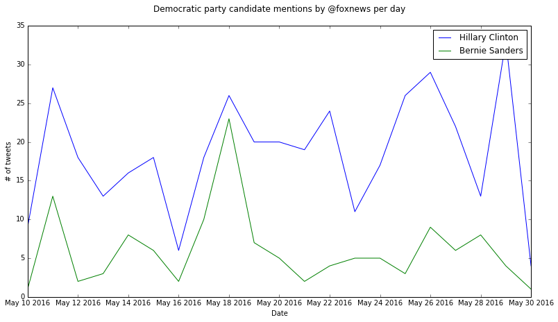
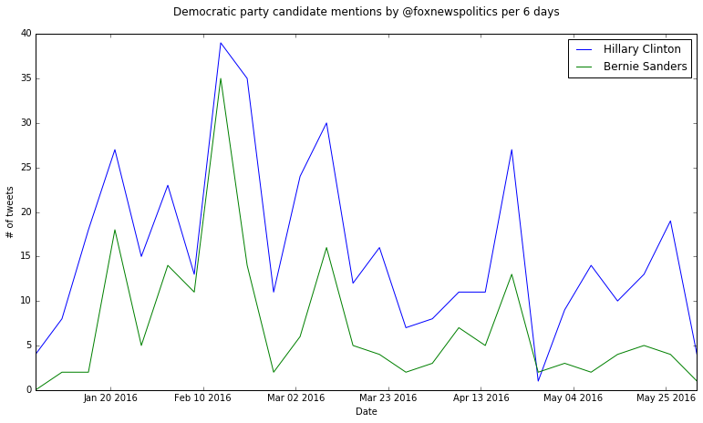
Unlike the trend seen in the Republican race, neither network ramped up their coverage on Clinton more than their coverage on Sanders in the month or two prior to his defeat. When Clinton's attention grew, Sanders' attention grew by about the same amount. Clinton did receive more total mentions, though. Noticing that Trump also secured his party’s nomination when he received the majority of his party’s media attention could be a correlation that would allow Clinton’s win, as well as other future wins, to be predicted.
I will not argue that media attention is the cause for a candidate’s popularity, because it seems even more likely that a candidate’s popularity is the reason for media attention, but both certainly have an effect on each other.
Exploring Sentiment
The number of times someone is mentioned in the news does not necessarily tell you if they’re being positively or negatively portrayed. Even if the news is presented in a neutral and unbiased tone, reporters can easily pick and choose what they want the public to see: for example, it is possible to continually publish quotations from a candidate saying something nasty in order to portray that person as perpetually rotten. Just as easily, they could publish nice words that other people say about a certain candidate for the opposite effect. This is what I hoped to pick up on in my sentiment analysis.
Below you will find the sentiment in every tweet mentioning one of the three candidates. You can see that @msnbc and @NBCpolitics tweets were slightly more likely to be negative when mentioning Donald Trump, and slightly more positive when mentioning one of the two Democratic Party candidates. However, they were also consistently more likely to be neutral than either the CNN or or the Fox News accounts.
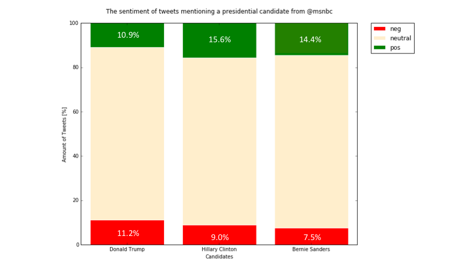
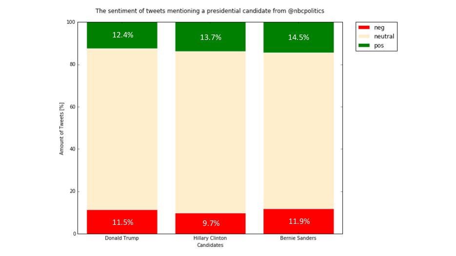
I expected that Fox would show more negative sentiment when mentioning Bernie Sanders, based on the public’s perception that they cater to a conservative audience. This turned out to be the complete opposite of the truth: for both @foxnews and @foxnewspolitics, Donald Trump received the most negative sentiment, followed by Hillary Clinton and then Bernie Sanders with less negative sentiment than either.
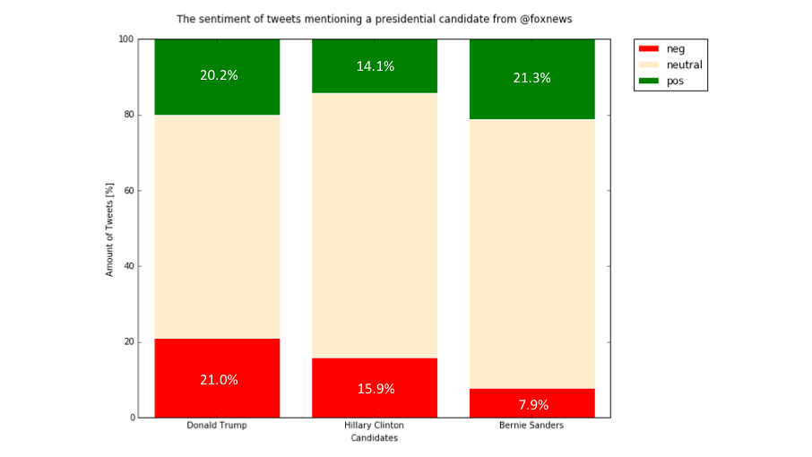

@cnn and @cnnpolitics was more likely to be positive when mentioning Hillary Clinton than the other two candidates, though all three politicians received significant amount of positive sentiment from @cnn.
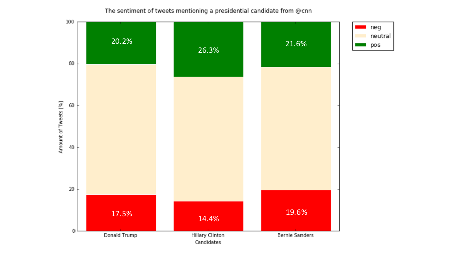
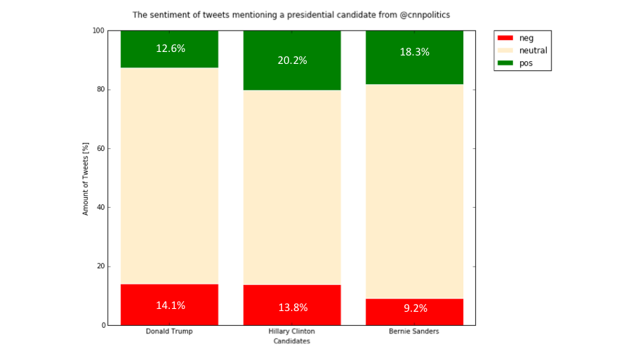
Trump’s twitter isn’t as negative as it seems.
For those that don’t know, Trump has received criticism for his recurring insults, both in debates and on twitter. The sentiment analysis tool detected that he did, in fact have the highest percentage of negative tweets. The most surprising result, as you can see from the graph below, is that Trump also has the greatest percentage of tweets that registered as positive.
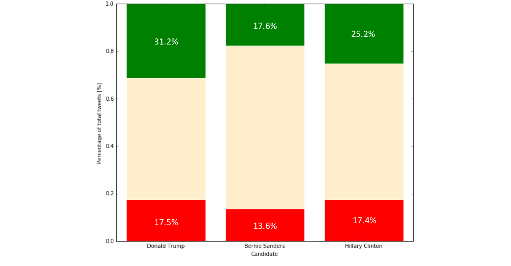
Trump’s twitter isn’t as negative as it seems: unless he’s talking about the other candidates.
The story changes when only the tweets mentioning his political rivals are analyzed. Like I mentioned earlier, Donald Trump, the only remaining Republican Party candidate, is known to regularly hurl insults at his opponents. I wanted to see how often he did, and how Clinton and Sanders compared.
Hillary Clinton talked about Donald Trump far more often than she talked about her direct opponent, Bernie Sanders. When she mentioned Trump, her tweet was more often negative than positive.
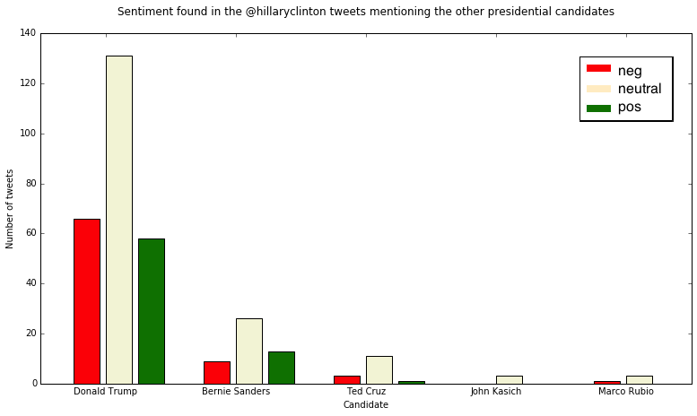
Meanwhile, Sanders mentioned Clinton far more often than he mentioned Trump during his campaign. As seen before, his tweets were more likely to have a predominantly neutral sentiment, but his tweets that mention Clinton were almost as likely to have a negative sentiment than a positive one.

Last but not least, Trump was the only candidate who was consistently more often negative than positive when mentioning the other candidates: you can see in the graph below that this is true for all five of his political opponents.
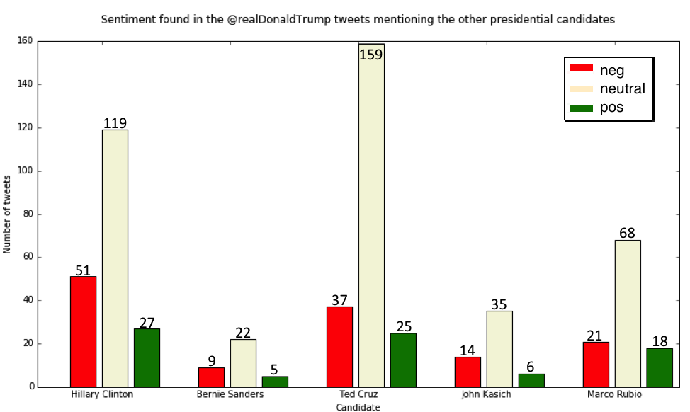
How can twitter predict the results of the general election?
It will be interesting to see which of these trends continues throughout the general election. Based on what I found during the primary race, monitoring the candidate’s media attention could be a good way of predicting a winner.
Additionally, monitoring the sentiment of the candidate’s tweets, and any tweets mentioning their names, could be another indicator: Sanders’ personal tweets were found to be more often neutral than Clinton or Trump’s, and his mentions in the media also were also more often more often to be neutral. On the other hand, Trump and Clinton were more polarizing: They had more positive and negative tweets from their personal accounts, and they also had more positive and negative mentions in the news. It may very well be that polarization correlates with political popularity, but we will have to wait to see as the race continues.
How I got my results
I used a website called snapbird.org that shows the 3000 most recent tweets for each twitter account. I found that snapbird.org had a number of interactive elements that I had to deal with when collecting my data:
- an ajax pop up window
- a separate page for logging in to twitter
- text input boxes for my twitter username, password, and the name of the account I want to view
- a “load more” button that added more tweets to the bottom of the page, 100 at a time.
I decided to use my favorite new webpage scraping tool, ParseHub, since it makes collecting data from interactive webpages easy. I quickly put together a set of instructions that would collect the text and date of every available tweet for any given account. See ParseHub’s documentation to see what else it can do.
The text-processing.com API was easily integrated into my iPython Notebook. I looped through the text of each tweet in the pandas objects and sent them, through an HTTP Post, to the text-processing.com URL. In return I was sent a JSON with two elements which I saved into the pandas objects: the “negative”, “neutral” or “positive” label, as well as the probabilities for each sentiment that the API calculated. To learn more about the text-processing.com API, check out the demonstrations here.
You can see the specific ParseHub instructions and the HTTP POSTS that I used in this step-by-step tutorial. It will teach you to mine the sentiment of tweets just as I did here, and give you an idea of how it can be done for other social media sites.
To see the entirety of my python code and tables of data, see the second part of the tutorial, where I go over the analysis, and the creation of the graphs in this article.